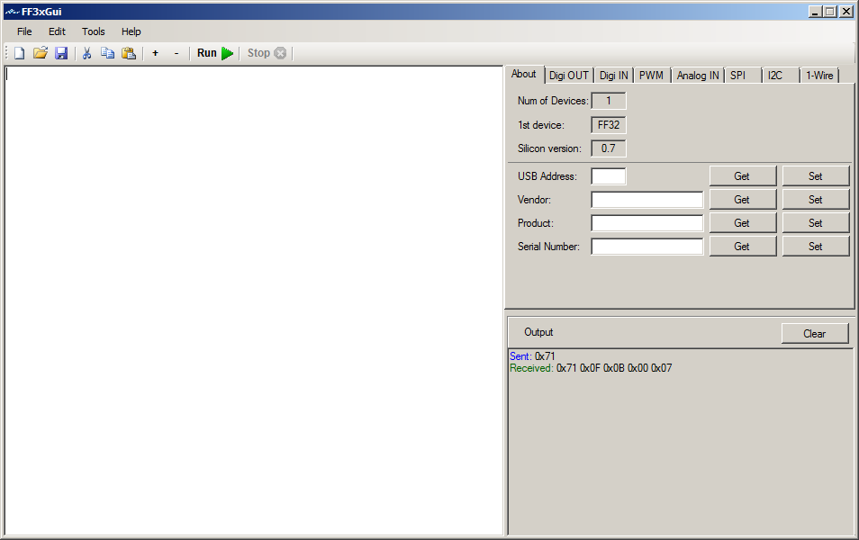
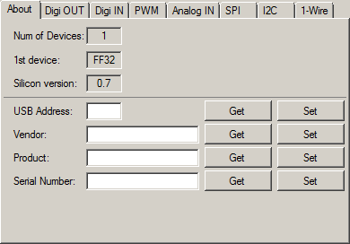
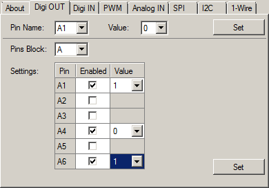
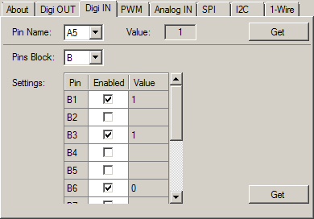
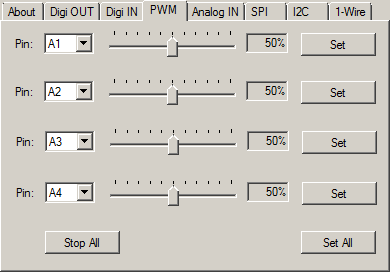
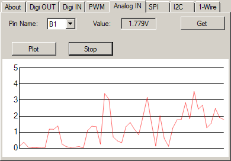
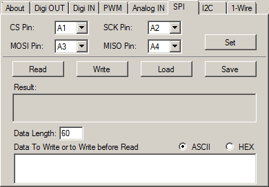
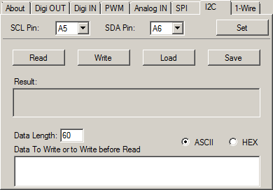
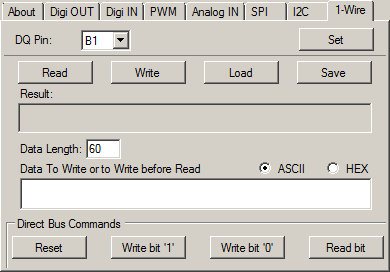

FF3xGui
This is a GUI for Programming the FF32 chip from FlyFish Technologies
It has an editor for writing and running FF3 Script files.
The right part of the screen is for direct communication with the FF32.

File Menu ;
New ; Creates a new blank file
Open ; Opens an existing file
Save ; Saves the file
Exit ;Exits the program
Edit Menu ; (right clicking in the editor window pops up this menu as well)
Undo ; Undo the last action in the editor
Redo ; Cancel the Undo action
Cut ; Cuts the selection in the clipboard
Copy : Copies the selection to the clipboard
Paste ; Paste at the current cursor location
Select All ; Selects the entire editor window contents
Tools Menu ;
Run ; Runs the current script
Stop ; Stops running
Set Font ; Changes the Font and color of the editor window
Create HEX File ; Opens a new window to type hex bytes to save as a bin file, or as a hex file with HEX digits.
Split File ; Splits a file in multiple files of max number of bytes, small window will pop up in the editor window left above, asking for the max number of bytes in each file, numbers will be added to the original file name.
Hex to Bin ; Converts a file of hex digits into a binary file, only lines containing only hex digits (0-9, a-f, A-F) will be converted If a line has an odd number of characters then a zero will be inserted at the beginning of the line.
Intel HEX to BIN ; Converts an Intel hex file into a binary file, data part only, addresses etc will be ignored.
Help Menu ;
Help ; Shows this help file
Help Index ; Shows this help file index
The tools bar ;
First block is New, Open and Save
Second block is Cut, Copy and Paste
Third block is Zoom and Zoom out in the editor window, (makes text bigger + or smaller -)
Fourth block is running the script.
Last block is stopping the script
The right part of the screen is the interactive part for direct communication with the FF32.
The Output window below shows the result of the actions, the clear button clears this window.
About ;

Shows the number of devices connected, the 1st device and
the firmware version.
You can get and set the USB address for the device,
Vendor name, Product and Serial Number.
Can write anything you want and click
on Set to Save it in the ff32
Dig OUT ;

Here you can set pins high or low (1 or 0)
Or set a
whole block or several pins in a block (A or B) at once.
Only the pins with
Enabled checked will be affected.
Dig IN;

Read the value, low or high from a pin or read more pins
from a block or a whole block.
Only pins with Enabled set will be read.
PWM;

Sets one to 4 of the A block pins as PWM, from 0 to
100%
Stop All will set all 4 to 0%, Set All will set all 4 pins at once with
the specified %
Analog IN;

Gets the Analog input from one of the B pins.
Plot
will start sampling the pin and plots a graphical (Simple Scope)
Stop,
stops sampling and plotting.
SPI;

For SPI serial communication.
First Set the pins to
use for CS, SCK, MOSI and MISO.
Read will read the SPI port (Data Length
bytes), if there is data in the Data to Write or Write before Read
part
Then this data will be send out before the read starts
Write will
write out the data in the Data to Write or Write before Read part
Load will
load a file in the Data to Write or Write before Read part (max 60
bytes)
Save will save the Data to Write or Write before Read part to
disk
Data length is the max number of bytes to read. (max 60 bytes)
ASCII
or HEX can be set to set the Data to Write or Write before Read part in ASCII or
HEX mode.
Type only HEX Digits in hex mode or data might be lost.
I2C;

For I2C serial communication.
First Set the pins
to use for SCL and SDA
Read will read the I2C port (Data Length
bytes), if there is data in the Data to Write or Write before Read
part
Then this data will be send out before the read starts
Write will
write out the data in the Data to Write or Write before Read part
Load will
load a file in the Data to Write or Write before Read part (max 60
bytes)
Save will save the Data to Write or Write before Read part to
disk
Data length is the max number of bytes to read. (max 60 bytes)
ASCII
or HEX can be set to set the Data to Write or Write before Read part in ASCII or
HEX mode.
Type only HEX Digits in hex mode or data might be lost.
1-Wire;

For 1Wire serial communication.
First Set the
pin to use for DQ
Read will read the 1Wire port (Data Length
bytes), if there is data in the Data to Write or Write before Read
part
Then this data will be send out before the read starts
Write will
write out the data in the Data to Write or Write before Read part
Load will
load a file in the Data to Write or Write before Read part (max 60
bytes)
Save will save the Data to Write or Write before Read part to
disk
Data length is the max number of bytes to read. (max 60 bytes)
ASCII
or HEX can be set to set the Data to Write or Write before Read part in ASCII or
HEX mode.
Type only HEX Digits in hex mode or data might be lost.
Reset
will reset the port
Write bit 1, writes a 1, Write bit 0 writes a 0 and read
bit reads one bit.
FF32 Scripting is a simple scripting langue to controll all the ff32 functions.
It can cotroll all the pins, as well as analog in, PWM, SPI, I2C and 1Wire
A blinking LED script looks like this;
do
a1 = 1
sleep
a1=0
sleep
loop
This will blink a LED on pin A1 every second
Numeric Expressions
These are just numbers and calculations
Numbers can be entered as decimal,
hex and binary
Hex numbers Start with an x, like xBA4C
Binary numbers
starts with an n like n1001101
Valid numbers are ; 1234545, x23FDE, xfde34, n11001, X45F, N1101 etc.
Negative numbers like -23 are not allowed, because you work with bytes
most and so is xFF 255 or -1, so it will always be 255
Calculations can result in
negative numbers, like 1-2 results in -1, and they can be stored in the S variables,
but when used they will be converted to positive with many of the commands that
use bytes.
Calculations
There are a few math calculations;
+ Plus, adding
- minus, substation
* Multiply
/ Division
% Mod
^ Power
& Bitwise And
| Bitwise Or
Valid numerical calculations are ; 12 + 56 / 7, xFF * 3, n101 + xB, n11 ^ 2, nFF & 3 | A1 etc. (A1 is pin A1 on the FF32)
String Expressions
String expressions consist of strings and/or
numeric expressions, separated by a , (comma)
String go between "
"Hello ",1234," world" will give a string as 'Hello 1234 World'
"hello ",xBAB will result in 'Hello 2987'
"Port A1 is ; ",A1 will give 'Port A1 is ; <value of port A1, 1 or 0>'
"abc", 5 * 10 , "def" will be 'abc50def'
HEX Strings
Hex digits can be entered between [] like [a34bc3f] or [34DEF6CD]
These are separate stings and cannot be used in calculations and string expressions
Intern they are converted to binary when used, when the length is odd, a zero will be inserted at front.
Compare Expressions (Conditions)
A comparison consist of 2 numeric
expressions and one compare instruction between {} like {5 = 6}
They return false or true
and can only be used with the IF and LOOP UNTIL commands
Only 3 compare instructions are available;
= Equal (if is the same)
< Les than (if smaller)
> Greater than (if bigger)
Some examples are; {A1=1} {34 > 67} {3*6+1 = 56} etc.
All variables are predefined.
Most imported are the port pins as variables, these are A1 .. A6 and B1 .. B12
These are 1 bit variables, are only 1 or 0, they can be
set like A1=<numeric expression)
When the result of the numeric
expression is not 1 or zero, then it will be compared to
the half of the
voltage, so when powered with 5 volts, the pin will be set to zero if
the
result is below 2.5,when the power is 3.3 volt, then zero is below
1.5
When used in expressions, they will return the state of the pin, always 1 or 0.
Examples ;
A1=0
B10 = 1
a3 = a3 | a1
b12 = 5 * 6
Then there are 2 special
block variables, AB and BB, they set or read a whole block.
When set they need
2 numeric expressions, the mask and the data, when read they need only the
mask.
Like AB=<mask> <data> Ports where the mask is 0 will not be affected.
Examples ;
AB = 3 1 Will set A1 to 1 and A2 to zero
BB = n101 n100 Will set B3 to one and B1 to zero
BBn1010 Will return the pins of B2 and B4, when both are low it return zero, when both are high it returns 10 (decimal)
Then there are 12 analog pin variables, BA1 .. BA12, they are read only and returns the voltage from the pin.
Examples ;
BA10 Returns the voltage on pin B10
ba9 * 10 Returns the voltage on pin B9 multiplied by 10
BA1 / 100 Returns the voltage from pin 1 devided by 100
There are
9 predefined (double) variables, S1 .. S9
They can be write and read and can
contain negative numbers as well as result of an expression.
But -1 be
converted to 1 when used as byte and not 255
Examples ;
S4 = 12.7
s1 = 5 / 2
S2 = S1 * S4
Then there are 4 buffers of 60 bytes, Buffa .. Buffb
They can be filled with a string expression or
with a HEX string.
They can be used in string expressions as well.
And they can be accessed by index like BUFFA(4)
Examples ;
BUFFA = [45def45ab]
buffb = "Port B12 is ; ",b12
Buffd = "Buffa = ",buffa
buffa(5)=12
BUFFD(4) = BUFFA(5)
And then there is a read only variable V, which contains the power, 5 or 3.3
Commands / Statements are always the first in a line.
Case don't matter, can be uppercase or lowercase or combination.
' is the remark symbol, a line beginning with ' will be ignored.
Commands are ;
WRITE (filename) BUFFx
Writes a buffer, BUFFA .. BUFFD, to a file (filename)
Filename can be a string expression as well
write (test.txt) buffa
write ("test",s1,".txt") buffb
READ (filename) BUFFx
Reads a file into a buffer, BUFFA .. BUFFD
Filename can be a string expression as well
If the file exists it reads max 60 bytes
read (test.txt) buffa
read ("test",s1,".txt") buffb
PRINT <D/S/X/N> (string expression) or (numeric expression)
Prints a string expression or numeric expression to the output screen on the right below.
<D/S/X/N> is optional, only one of them, no combinations
If D then it will force to print decimal > print d 5 * 10 > 50
If S it will force to print as a string > print s "hello world" > hello world
If X it will force to print as HEX > print x 255 > FF
if N Then it will print the result as binary > print n xa > 1010Default is decimal or string, depending on the expression to print.
SLEEP <numeric expression>
Sleeps for 1 second default, or when numeric expression is present, it sleeps for the result of the expression in milliseconds.
sleep > sleeps one second
sleep 500 > sleeps 500 milliseconds
WAIT pin= 0/1 <numeric expression>
wait (sleeps) until the pin goes high or low, numeric expression is optimal en is the max milliseconds to wait.
wait b1 = 0 > waits until pin b1 becomes zero.
wait a1 = 1 500 > waits until pin a1 goes high or 500 milliseconds, whatever comes first.
PWM pinA numeric expression
Sets the PWM on one of the A pins (A1 .. A6)
Numeric expression is the percentage (0 .. 100%)
Greater than 100 will always be 100
pwm a2 50 . sets PWM on a2 at 50%
pwm a1 50 / 2 > sets PWM on pin a1 at 25%
SPI SET pin1 pin2 pin3 pin4 (CS,SCK,MOSI,MISO)
Sets the pins used for SPI, can be any pin (A1 .. A6, B1 .. B12)
pin1 - CS, pin2 - SCK, pin3 - MOSI and pin4 - MISO
spi set a1 a2 a3 a4 > sets SPI pins (a1 .. a4) resp (CS,SCK,MOSI,MISO)
SPI WRITE (string expression) or (HEX String)
Writes the string expression or hex string (max 60 bytes) to the SPI port
spi write "hello world" > sends hello world out on SPI
spi write [f3ad56eb] > writes an hex string to the SPI port as binary
SPI READ len BUFFx <(string expression) or (HEX String)>
Reads len number of bytes from SPI in one of the buffers (BUFFA .. BUFFD)
len is a numeric expression max 60 If higher it will be 60
When the string expression or hex string is present, then this will be written before reading (max 60 bytes)
spi read 10 buffa > reads 10 bytes from SPI in buffa
spi read 20 buffb "hello" > writes hello to SPI and then reads 20 bytes in buffb
spi read 60 buffc [abcdef09] > writes the hex string as binary to SPI and then reads 60 bytes in buffc
I2C SET pin1 pin2 (SCL,SDA)
Sets the pins used for I2C, can be any pin (A1 .. A6, B1 .. B12)
pin1 - SCL and pin2 - SDA
i2c set a1 a2 > sets SPI pins (a1 .. a2) resp (SCL,SDA)
I2C WRITE (string expression) or (HEX String)
Writes the string expression or hex string (max 60 bytes) to the I2C port
i2c write "hello world" > sends hello world out on I2C
i2c write [f3ad56eb] > writes an hex string to the I2C port as binary
I2C READ len BUFFx <(string expression) or (HEX String)>
Reads len number of bytes from I2C in one of the buffers (BUFFA .. BUFFD)
len is a numeric expression max 60 If higher it will be 60
When the string expression or hex string is present, then this will be written before reading (max 60 bytes)
i2c read 10 buffa > reads 10 bytes from I2C in buffa
i2c read 20 buffb "hello" > writes hello to I2C and then reads 20 bytes in buffb
i2c read 60 buffc [abcdef09] > writes the hex string as binary to I2C and then reads 60 bytes in buffc
1WIRE SET pin
Sets the pin used for 1Wire (DQ), can be any pin (A1 .. A6, B1 .. B12)
1wire set b1 > sets b1 to be uses as DQ pin for 1Wire
1WIRE WRITE (string expression) or (HEX String)
Writes the string expression or hex string (max 60 bytes) to the 1Wire port
1wire write "hello world" > sends hello world out on 1Wire
1wire write [f3ad56eb] > writes an hex string to the 1Wire port as binary
1WIRE WRITEB numeric expression
Writes one bit (1 or 0) out to the 1Wire port
When the result of the numeric expression is not 1 or zero, then it will be compared to
the half of the voltage, so when powered with 5 volts, the pin will be set to zero if the
result is below 2.5,when the power is 3.3 volt, then zero is below 1.5
1wire writeb 0 > send a zero out to 1Wire
1WIRE READ len BUFFx <(string expression) or (HEX String)>
Reads len number of bytes from 1Wire in one of the buffers (BUFFA .. BUFFD)
len is a numeric expression max 60 If higher it will be 60
When the string expression or hex string is present, then this will be written before reading (max 60 bytes)
1wire read 10 buffa > reads 10 bytes from 1Wire in buffa
1wire read 20 buffb "hello" > writes hello to 1Wire and then reads 20 bytes in buffb
1wire read 60 buffc [abcdef09] > writes the hex string as binary to 1Wire and then reads 60 bytes in buffc
1WIRE READB Sx
Reads one bit (0 or 1) from the 1Wire port in a Sx variable (S1 .. S9)
1wire readb s3 > reads one bit from the one wire port in s3
1WIRE RESET Sx
Resets the 1Wire port, Sx is a S variable (S1 .. S9) and contains the number
1Wire devices found, if Sx is zero then there are no 1Wire devices connected.
IF {compare expression} statement
The statement will be executed when the compare expression returns true
if {a1 =0} print "A1 is low" > will print A1 is low when pin a1 is 0
if {a1 =1} print "A1 is high" > will print A1 is high when pin a1 is 1
DO
Starts a loop, defines where a loop jumps back to, if there is no LOOP, it will just do nothing.
do > Defines the do location
LOOP <numeric expression>
End of a loop, jumps back to just after the DO
When numeric expression is present then it will jump result of expression times.
loop > jumps back to the line after DO
loop 10 > loops 10 times. and then continues with the following lines
LOOP UNTIL {compare expression}
Loops back to DO when the compare expression returns false
loop until {a3 = 0} Jumps back to the line after DO when pin a3 is 1, else it just continues.
Nested loops are not implemented, LOOP will jump back to the last encountered DO
END
If used inside a loop, it will end the loop and jump to the line after the loop
if used outside a loop it will end (stops) the script.
Connect a LED on A1 and on A2 with a resistor, a pull up
resistor and a switch to gnd on B1
Run this script and the leds start blinking
until you push the switch.
' blink 2 LEDs on A1 and A2 until B1 =
0
do
a1=1
a2=0
sleep
a1=0
a2=1
sleep
loop until {b1=
0}
Reads the temperature from a DS18B20 by 1wire on pin B1.
It keeps looping,
so press stop to stop it
' reads temp from 1wire device
DS1820 on pin B1
s2 = 1-2
1wire set b1
1wire reset s3
if {s3=0} end
do
1wire write
[cc44]
sleep
1wire read 9 buffa [ccbe]
s1 = buffa(1) * 256 +
buffa(0)
if {buffa(1) > 127} s1 = 65536 - s1
s1 = s1 / 16
if
{buffa(1) > 127} s1 = s1 * s2
print s1
loop
This controls a servo via pin B1 with a potentiometer, The servo sits on pin A1
' control a servo on pin A1 with a potentiometer
on B1
do
s2 = 100 / v
s1 = ba1 * s2
pwm a1 s1
loop